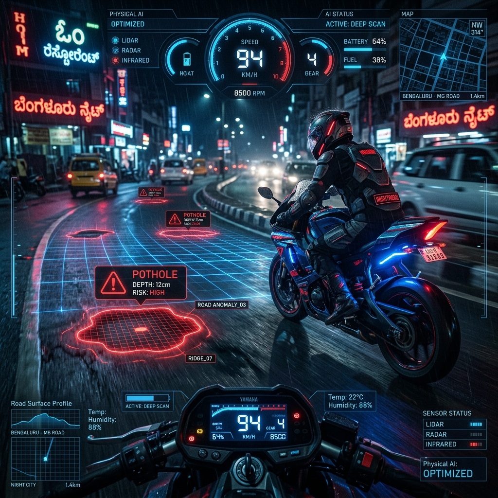

Sector 7-G // Equilibrium
MEDHANSH KABADWAL: Engineering Intelligent Safety Systems for the Developing World.
Descent
keyboard_double_arrow_down
A neural architecture designed for high-stakes environmental perception. By synthesizing disparate sensor streams, FusionNet establishes a digital consciousness capable of predictive safety maneuvers in chaotic urban terrains.
Active Projects & Technical Artifacts

Real-time motorcycle telemetry visualization with a cyberpunk rider HUD. Features Web Audio API acoustic synthesis, haptic feedback, Mission Control analytics, and live GeoJSON export.

Unified 9-stage Physical AI road engine featuring Indian ALPR, optical flow speed estimation, pediatric pillion sorting, cultural helmet classification, and live MJPEG/REST streaming.

Enterprise physical AI road anomaly classification platform featuring a native C++ Edge Core with Biquad SOS filtering, scikit-learn BallTree DBSCAN clustering, and PostGIS spatial ingestion.
Sonic Explorations & Creative Ventures